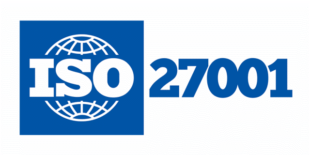

Voltar à página inicial
O que é ISO 27001?
A ISO/IEC 27001 é o padrão internacional mais reconhecido para gestão de segurança da informação. Ele especifica os requisitos para estabelecer, implementar, manter e melhorar continuamente um Sistema de Gestão de Segurança da Informação (SGSI).

ISO 27001:2022
A versão atualizada em 2022 trouxe mudanças importantes:
- Redução de 114 para 93 controles
- Agrupamento dos controles em 4 temas (em vez de 14 domínios)
- Novos controles para abordar ameaças modernas
- Maior alinhamento com outras normas ISO
- Ênfase em gestão de riscos e melhoria contínua
Estrutura Principal
1. Anexo A - Controles de Segurança
Organizados em 4 categorias:
- Pessoas (8 controles): Conscientização, responsabilidades
- Organizacional (37 controles): Políticas, classificação de informação
- Tecnológico (34 controles): Criptografia, segurança física
- Físico (14 controles): Segurança de equipamentos, acesso físico
2. Ciclo PDCA
Baseado no modelo Plan-Do-Check-Act:
- Plan (Planejar): Estabelecer políticas, objetivos, processos
- Do (Implementar): Executar os processos planejados
- Check (Verificar): Monitorar e medir os processos
- Act (Agir): Tomar ações para melhorar continuamente
Benefícios da Certificação
- Proteção de dados: Redução de riscos de vazamentos e ataques
- Vantagem competitiva: Diferencial no mercado
- Conformidade: Adequação a leis como LGPD e GDPR
- Confiança: Aumenta a confiança de clientes e parceiros
- Eficiência: Processos de segurança bem definidos
- Resiliência: Melhor preparo para incidentes
Processo de Implementação
Principais etapas para implementar a ISO 27001:
- Obter comprometimento da alta direção
- Definir escopo do SGSI
- Realizar avaliação de riscos
- Selecionar controles aplicáveis
- Desenvolver políticas e procedimentos
- Implementar controles
- Treinar e conscientizar colaboradores
- Realizar auditoria interna
- Corrigir não conformidades
- Passar por auditoria de certificação
O processo completo normalmente leva de 6 a 12 meses, dependendo do tamanho da organização.
Voltar à página inicial